Projects
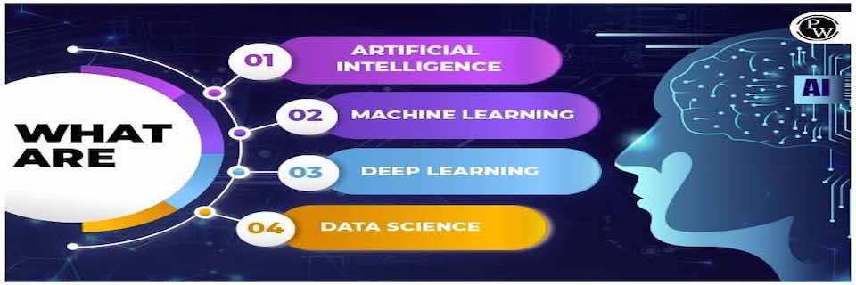
Image Processing
In image processing, we focus on edge detection and object detection. For edge detection, we use Conditional Random Fields (CRF) to improve the existing edge detection methdology. We detect all edges with closed lines and without duplicate edges. For object detection, we add arbitrary features to the objects to deep learning model to enforce deep learning model to learn the characteristics of specific objects.
Edge Detection
The challenge in line segmentation is that the threshold of the gradients have to be determined in the first place, a set of criteria are needed to define the properties of line segments, fractions of the image need to be detected, the validation of the line segment is also determined arbitrarily. We proposed a sematic line segmentation detection model based on conditional random fields (CRF) model. Based on the gradients of the image, this methodology does not require any prior knowledge about the image, no fraction selection, no threshold, no criteria for region growth and rectangle validation.
Methodology
CRF model, as shown in figure 1, can be considered as Markov random fields model. The initial transition probability of each pixel is the same. During each iteration, the state function can average out the different among neighbors and the transition function update the featured pixels. Apparently, state function make the local pixels similar to each other. This operation is especially useful when some pixels are changed because of noise or system errors. When the significance of each pixel is computed not only with the value of the pixel itself but also the values of the adjacent neighbors, system errors and arbitrary noise can be average out. Feature function is defined with the features we pick so that it can consistently increase the significance of features and depress the significance of none features.
Figure 1. Conditional Random Fields Model
Performance
We tested the methodology with several images, such as, the image of simple lines, the image of simple objects, and the portrait of a person. We use the same feature functions and the same Gaussian kernel to detection line segments in three different images. In figure 2(a)(b)(c), we compared out results with the ones generated with Linear Time Line Segmentation Detection (LTLSD) method.
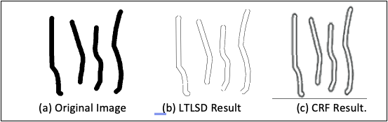
(a)
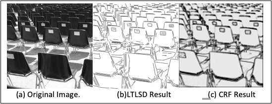
(b)
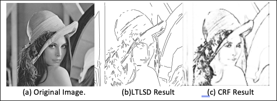
(c)
Figure 2. Comparison of CRF results with LTLSD results
In LTLSD result, as shown in figure 2(a), objects in the image are not closed. As shown in figure 2(b), many line segments are doubled which make the image not readable, some lines apparently are shadows but were extracted as lines. As shown in figure 2(c), in the background, a lot of lines are cut. Around the face and the hat, some small circles and short lines are not detected and some are not closed.
Top
Object Detection
Deep learning is generally used in image recognition. For example, deep learning can recognize handwriting of 10 digital numbers in MNIST data set. Deep learning does not require pre-selected feature set for training, as shown in figure 1. During training, deep learning model repeatedly select features, evaluate the quality of the feature set and generate output for next layer. However, What exactly does the deep learning model learn from the training set?
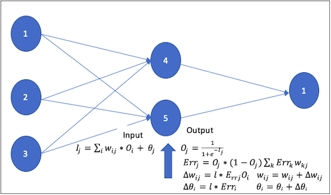
Figure 1. Deep Learning Model
In image processing, there are a lot of features in one image. It is information rich. Normally, one small detail is the combination of many pixels, which is too much for human to quantitatively check each one of the computation units - the pixels.
Deep learning model selects features from entire images. If there are some common patterns which can differentiate the ten categories, those patterns can be chosen as the feature set. Some features are related to the pictures, and some features are related to the objects, but, if we don't enforce the deep learning model to learn from objects, most of the features deep learning model learned are based on the pictures, which means deep learning model does not really learn the objects. This is major flaw in this process. If we change the background of the objects, deep learning can not recognize the objects any more.
Methodology
We add feature function to deep learning model so that deep learning model can be enforced to learn from the objects only, as shown in figure 2.
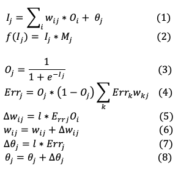
Figure 2. Feature Enforced Deep Learning Model
Performance
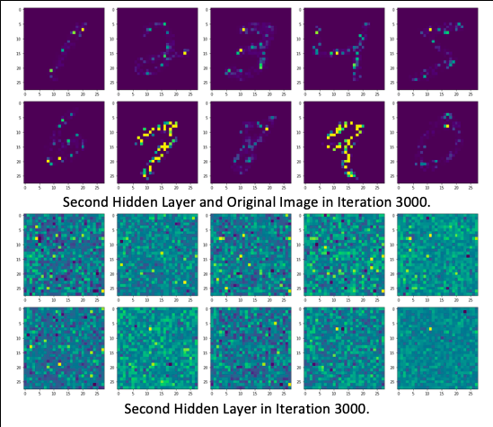
(a) Output from Original Deep Learning Model
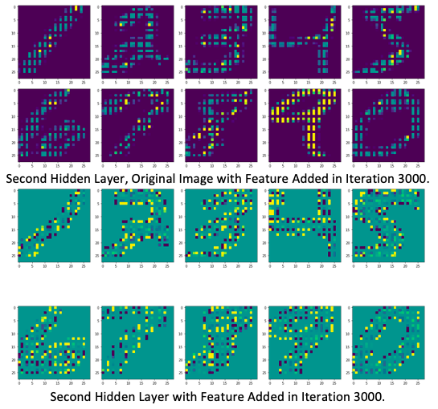
(b) Output from Feature Enforced Deep Learning Model
Figure 3. Comparison of Features in Decision layer
In the original output in figure 3(a), we can see some feature spots which are the common patterns in different images but those patterns are not meaningful. After we add feature filter to the deep learning model, the model only picks features from object regions and the output shows the features of the objects, as shown in figure 3(b).
Top
Social Graph Analysis
Technology Trends
Understanding the structure of the network is central in network analysis. We are interested in extracting valuable information from the network, such as trends, popularity, dynamic of the trends, and also profiles of popular items.
This prediction model can be used for many different applications. such as
- Technology Trends: citation/patent network
- Online market: co-purchase network
- Social Media Trends: online news/live journal/media sharing network
- Social Dynamics: friends network
Sample Data
This is a citation graph for high-energy physics research papers from 1991 to 2000, with a total of N = 29,555 papers and E = 352,807 citations
Data Modeling
In terms of data modeling, we need to define popular topics for each year with the citation data and also find out how many are new topics. In each popular topic, we need to find density of the topic, the change of the density in ten years, the diameter of the topic and the change of the diameter in ten years.
Lots of features are unknown in the citation network. For example, we don’t know the related topics of the papers. we don’t know how to define the popularity because we don’t have a big picture of the citation network. We can start from any paper and search along the path through the entire network. Whatever we can find is highly related to where we started. The citation network is so big that it is not feasible to try all of the papers. Also, we know that greedy search in the network is NP-hard. It is impossible to get it done in polynomial time.
Methodology
We decompose the network into two layers, as shown in figure 1. We use kronecker graph in figure 2(a) as the computation unit. Kronecker graph is the smallest symmetric graph and also is the smallest community in social network. Symmetric graph has structural properties and the mathematical properties which can support the decomposition and reconstruction.
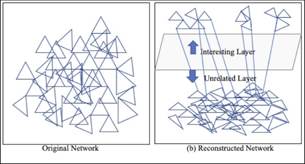
Figure 1. Network Decomposition
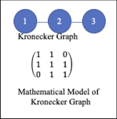
Figure 2(a). Kronecker Graph
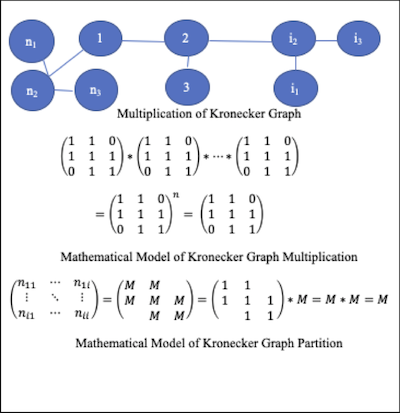
Figure 2(b). Graph Join and Project
Results
From 1991 to 2000, we summarized the number of nodes (papers and references), the number of edges (citations), maximum number of times that a paper was cited, the averages number of times that a paper was cited, as shown in figure 3.
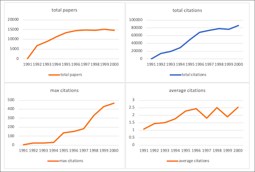
Figure 3. Statistics of Co-citation from 1991 to 2000
Each co-citation defines a topic so that the frequent co-citations define the popular topics. The frequency of the co-citation is highly biased. We use Expectation Maximization (EM) to group co-citations into 3 clusters, and statistics of popular topics is shown in figure 4. From 1991 to 2000, the number of publications, citations, and co-citations increase. From 1991 to 1995, there are less publications, citations, and co-citations. After 1995, the increase of publications, citations, and co-citations is not as fast as those years from 1991 to 1995. The number of topics increases from 1991 to 1994. After 1994, the change in the number of topics each year is small. Sometimes, it goes up and sometimes, it goes down, and it is around the average of 800 topics each year.
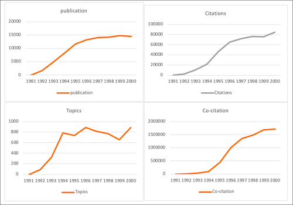
Figure 4. Statistics of Popular Topics from 1991 to 2000
These trends of research in10 years indicate that technology evolves every five years and can be completely updated in 10 years. When we work the frontier research, we need to trace back for about 5 years. In more than 5 years, most of the research is about something else. The trends of new publications, citation, and co-citations are consistent which can prove each other.
The number of topics increase from 1991 to 1994. In 1991, there are no paper published about the popular topics in 2000. From 1995 to 2000, the number of topics is almost stable. the number of topics goes up and down but the changes are small. The number of topics is consistent with the number of publications, the number of citations, the number of co-citations.
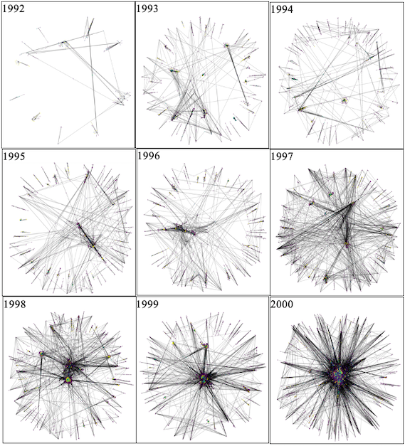
Figure 5. Citation Network on Popular Topics from 1992 to 2000
Top
Text Mining
For text mining, we focus on text similarity through dimension reduction by using Latent Semantic Analysis (LSA), text classification by using Featured Transformer Model (FTM) on top of Bi-directional Encoder Representation Transformer (BERT), entity extraction by using Conditional Random Fields mode. (CRF).
- Online News Popularity Prediction
- Text Classification through Featured Transformer Model (FTM)
- Entity Extraction through Conditional Random Fields model (CRF)
Online News Popularity Prediction
We have online news from three different websites: Facebook, GooglePlus and LinkedIn. We want to find out, for any news, if we can predict its popularity, based on the popularity of the existing news.
This prediction model can be used for many different applications. such as
- advertising
- election campaign
- posts recommendation
- dynamic content management
Sample Data
| Dimensions | Sample 1 | Sample 2 |
| IDLink | 88518 | 87218 |
| Title | Israel denies permits to Gazans for Palestine Marathon | Local organizations join USDA for initiative to bolster region's ... |
| Headline | Israel denies permits to Gazans for Palestine Marathon. A Palestinian youth stands next to a national flag at the Palestinian side of Beit Hanoun | Local organizations join USDA for initiative to bolster region's economy. Story · Comments. Print: Create a hardcopy of this page; Font Size: |
| Source | The Daily Star | Bristol Herald Courier (press release) (blog) |
| Topic | palestine | economy |
| PublishDate | 3/31/2016 3:45:16 PM | 3/31/16 15:54 |
| SentimentTitle | 0.100503782 | -0.180421959 |
| SentimentHeadline | 0.150351633 | 0.0875 |
| Facebook | 24 | 12 |
| GooglePlus | 5 | 8 |
| LinkedIn | 2 | 0 |
Data Modeling
Based on this data, we can see it is both a text mining task and also a classification task. We need to understand text and also use other features to label each data entry. The data model is built in the following steps:
- Build semantic space
- Reduce dimensions with Latent Semantic Analysis
- Generate sample set for given news
- Remove Outliers
- KNN Classification
- Adjust parameters for better results
- Interpret results
For text mining, we can have two solutions
- Bag of words
- Latent Semantic Analysis (LSA)
For popularity prediction, we choose Latent semantic analysis.
For other features, such as Source, SentimentTitle, SentimentHeadline, we can directly use them to make prediction.
Before we use choose classification algoritm, we evaluate the significance of the features with information gain, as listed below:
| Website | Source | SentimentTitle | SentimentHeadline |
| Facebook | 0.6427983828436333> | 0.682137527933072 | 0.6065400706568865 |
| GooglePlus | 0.4545358118900283> | 0.48596147409162366 | 0.4117329019171993 |
| LinkedIn | 0.5177361250103715 | 0.5575869048549802 | 0.4672467847269911 |
The information gain shows use that these features are not very strongly related to the prediction. We don't have many features to choose. We don't have domain knowledge to add extra information into the feature set, either. We need to improve the quality of the raw data as much as possible.
Our solution is that we not only use latent semantic analysis to make the text feature more meaningful, also, based on the new data, we only use similar news to predict the label of the new data. In other words, we create a specific data set for each news we are going to classify. The data modeling process can be generalized but each model we generated is specified for the a particular news. We don't create a general model for all of the news, but, each model can classify the particular news better.
Latent Semantic Analysis
Latent semantic analysis (LSA) is a technique for text processing. The idea behind latent semantic analysis is that, in psychology, we consider people learn language through words instead of grammar. Think about how babies learn languages. They just put words together and it is going to make sense. However, the context of the words can not be ignored, although we can ignore the grammar.
Each word can have multiple meanings in different context and different words can have the same meanings in the same context. This is the most confusing part in text mining, which almost makes it impossible to process the text. However, when LSA comes into play, the myth is deciphered. The way it works is straightforward that it simplifies the content. The formula of LSA is listed below.
Figure 1. Latent Semantic Analysis
The matrix in the middle on the right side of equal symbol is for topics. We start with all the text and it ends up with we project text into several topics and thos topics are related to the text content.
Performance
We test the data modeling strategy for three times with three different news. The performance is listed below.
Experiment 1
| News | Get a $50 Microsoft Store gift card with Xbox |
| Dataset size | 7942 |
| After Sample Selection | 212 |
| Features | Source, SentimentTitle, SentimentHeadline |
| Predict | Popularity |
| Source | Actual Score | Predicted Score | Average | Max | Min |
| Facebook | 9 | 10 | 64.5 | 3832 | 0 |
| GooglePlus | 2 | 3 | 7.58 | 186 | 0 |
| LinkedIn | 1 | 1 | 22.7 | 438 | 0 |
Experiment 2
| News | Windows 10 Mobile Build 10586.306 now being ... |
| Dataset size | 7942 |
| After Sample Selection | 82 |
| Features | Source, SentimentTitle, SentimentHeadline |
| Predict | Popularity |
| Source | Actual Score | Predicted Score | Average | Max | Min |
| Facebook | 23 | 3 | 60.5 | 1055 | 0 |
| GooglePlus | 0 | 1 | 6.8 | 234 | 0 |
| LinkedIn | 0 | 0 | 22.8 | 433 | 0 |
Experiment 3
| News | Xbox One Backward Compatibility: Two new games ... |
| Dataset size | 7942 |
| After Sample Selection | 87 |
| Features | Source, SentimentTitle, SentimentHeadline |
| Predict | Popularity |
| Source | Actual Score | Predicted Score | Average | Max | Min |
| Facebook | 6 | 5 | 31.2 | 775 | 0 |
| GooglePlus | 0 | 0 | 5.4 | 181 | 0 |
| LinkedIn | 0 | 5 | 24.7 | 622 | 0 |
Top
Featured Transformer Model (FTM) for Text Classification
Natural language is the most common ways to present information in different fields, in different perspectives and in different circumstances so that text becomes a rich source of information. However, with the development of information technology, the amount of documentation becomes impossible for human to handle. We need to take advantage of computers to help automatically understand documentation, group documentation into different categories, topics and subjects until the total amount of information is capable for human to handle.
Attention mechanism is a big breakthrough in deep learning. It becomes an increasingly popular concept and a useful tool in developing deep learning models for Natural Language Processing (NLP). Because it builds a shortcut of the context for input texts and promotes correlated words in one sentence. The importance vector in the attention layer can be updated through Markov-like updates and can be customized easily in classification. The prediction can be made by estimating how strongly the word is correlated with or attends to other words.
We propose a Featured Transformer Methodology (FTM) based on attention mechanism. It can efficiently add domain knowledge to deep learning architecture. The attention mechanism performs Markov-like updates. When the model converts, the associations between domain features and word embeddings can be extracted.
Sample Data
| Samples | Class |
| WBC 8.5 x/uL (4.5-9.8) | LAB |
| RBC 4.5 x/uL (0.5-5.0) | LAB |
| MCV 0.5 x/uL (0.0-5.0) | LAB |
| tramadol Allergy Intermediate hives | DOC |
| codeine Allergy Mild NAUSEA | DOC |
Methodology
Bidirectional Encoder Representations from Transformers (BERT) has transformer network architecture. Attention layer plays the role of aligning encoder and decoder layers. Encoder and decoder layers are built upon convolution networks instead of recurrent networks to reduce computation costs. Attention layer can be updated through Markov-like process as shown in Figure 1.
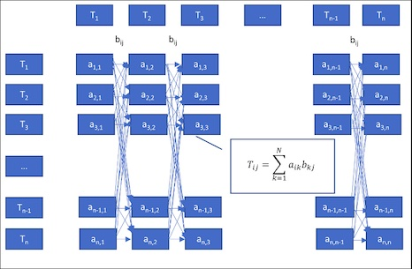
Figure 1. Markov Chain Updates
Connections between two sequences are presented in two-dimensional matrix in which each dimension has a sequence of tokens. The more often the connections appear, the larger the values are. Attention mechanism is a shortcut of Markov Chain in which attention layer has less heads than the previous layer. As shown in figure 2, in BERT network architecture, the importance vector of attention layer can align encoder to decoder and highly affect the final prediction. If we can properly adjust importance vector, for example, to promote positive patterns and suppress negative/random patterns, we can efficiently improve the model performance.
We propose Featured Transformer Methodology (FTM) to improve the performance of Transformer networks, especially on BERT network architecture. The idea is that we define patterns according to the domain knowledge, add patterns as arbitrary features to the input layer and use arbitrary features to promote the importance of corresponding terms on attention layer.
Performance
The model was tested with 2871 samples in which 788 samples were labeled as 'lab' and 2083 samples were labeled as 'doc'. As shown in the following table, the experimental results showed that the performance measurements, such as precision, recall, and F1-score, indicated that the model can be used to identify lab tests with 100% in all measurements. In comparison with the Conditional Random Fields (CRF) model, Bi-directional Encoder Representation Transformer (BERT), Naïve Bayes Support Vector Machine (NBSVM), Logistic Regression (LOGREG), FASTTEXT, Standard Gated Recurrent Units (STANDARD GRU), Bi-directional Gated Recurrent Units (BiGRU), Featured Transformer Methodology (FTM) can perform much better than CRF, BERT, NBSVM, LOGREG, FASTTEXT, STANDARD GRU, and BiGRU in all measurements.
Table 1. Performance of FTM on 2871 Samples
| Precision | Recall | F1-score |
| DOC | 1.00 | 1.00 | 1.00 |
| LAB | 1.00 | 1.00 | 1.00 |
| Macro Avg | 1.00 | 1.00 | 1.00 |
| Weighted Avg | 1.00 | 1.00 | 1.00 |
Table 2. Performance of CRF on 2871 Samples
| Precision | Recall | F1-score |
| DOC | 0.927 | 0.989 | 0.957 |
| LAB | 0.959 | 0.764 | 0.850 |
| Macro Avg | 0.943 | 0.876 | 0.904 |
| Weighted Avg | 0.935 | 0.933 | 0.931 |
Table 3. Performance of BERT on 2871 Samples
| Precision | Recall | F1-score |
| DOC | 0.99 | 0.99 | 0.99 |
| LAB | 0.99 | 0.99 | 0.99 |
| Macro Avg | 0.99 | 0.99 | 0.99 |
| Weighted Avg | 0.99 | 0.99 | 0.99 |
Table 4. Performance of NBSVM on 2871 Samples
| Precision | Recall | F1-score |
| DOC | 0.92 | 0.98 | 0.95 |
| LAB | 0.99 | 0.97 | 0.98 |
| Macro Avg | 0.96 | 0.97 | 0.96 |
| Weighted Avg | 0.97 | 0.97 | 0.97 |
Table 5. Performance of LOGREG on 2871 Samples
| Precision | Recall | F1-score |
| DOC | 0.92 | 0.96 | 0.94 |
| LAB | 0.98 | 0.97 | 0.97 |
| Macro Avg | 0.95 | 0.96 | 0.96 |
| Weighted Avg | 0.96 | 0.96 | 0.96 |
Table 6 Performance of FASTTEXT on 2871 Samples
| Precision | Recall | F1-score |
| DOC | 0.97 | 0.97 | 0.97 |
| LAB | 0.99 | 0.99 | 0.99 |
| Macro Avg | 0.98 | 0.98 | 0.98 |
| Weighted Avg | 0.98 | 0.98 | 0.98 |
Table 7. Performance of STANDARD GRU on 2871 Samples
| Precision | Recall | F1-score |
| DOC | 0.97 | 0.94 | 0.95 |
| LAB | 0.98 | 0.99 | 0.98 |
| Macro Avg | 0.97 | 0.96 | 0.97 |
| Weighted Avg | 0.97 | 0.97 | 0.97 |
Table 8. Performance of BiGRU on 2871 Samples
| Precision | Recall | F1-score |
| DOC | 0.98 | 0.98 | 0.98 |
| LAB | 0.99 | 0.99 | 0.99 |
| Macro Avg | 0.99 | 0.99 | 0.99 |
| Weighted Avg | 0.99 | 0.99 | 0.99 |
Top
Entity Extraction through Conditional Random Fields model (CRF)
In health care industry, lab test sections are normally written in free text format. With the rapid expansion of health care claims, the demands for automatically extracting lab test information from raw messages give rise to the opportunities to train computers to automatically review, extract and aggregate information to make data products. To make terms meaningful and to extract them from the text, Named Entity Recognition (NER) is one of the most used techniques.
There are several challenges in lab entity extraction. Each test starts with test name followed by quantities, units, references, and dates. Test names are pre-defined medical terms that can be stored in a domain dictionary. Units can also be considered as a set of pre-defined terms. The test results and references have pre-defined formats that have the minimum values, the maximum values, separators, and parenthesis, for example “(1.2-2.5)”. The formats of the test dates are also pre-defined. Other than the characteristics of each individual token in test results, the format of the test section is also different from other sections. In the test section, each row is a lab test, and each column is a measurement that can be results, units, references, etc. Test results and references fields can have words in common. Also, test units and abnormal flags fields can have words in common. However, each field needs to be labeled separately. All the tests are listed together in separate lines. We want to model these characteristics of the lab sections and to extract lab entities from the doctor’s notes.
Sample Data
| Raw | Lab Test Name | Value | Unit | Reference Range | Abnormal Flag |
| RBC, 4.02, 10E6/UL, (4.50-5.90), L | RBC | ['4.02'] | ['10E6/UL'] | ['(4.50-5.90)'] | ['L'] |
| GRAN, 0.1, 10E3/UL, (0.0-0.0), H | GRAN | ['0.1'] | ['10E3/UL'] | ['(0.0-0.0)'] | ['H'] |
| BUN, 22, MG/DL, (6-20), H | BUN | ['22'] | ['MG/DL'] | ['(6-20)'] | ['H'] |
| GLUCOSE, 135, MG/DL, (70-110), H | GLUCOSE | ['135'] | ['MG/DL'] | ['(70-110)'] | ['H'] |
| C-REACTIVE, PROTEIN, 4.7, MG/DL, (0.5-1.0), H | C-REACTIVE PROTEIN | ['4.7'] | ['MG/DL'] | ['(0.5-1.0)'] | ['H'] |
Performance
| Evaluation | Precision | Recall | F1-score | Support Samples |
| LAB Test Name | 1 | 1 | 1 | 27700 |
| Reference Range | 1 | 1 | 1 | 1874 |
| Unit | 1 | 1 | 1 | 884 |
| Abnormal Flag | 1 | 1 | 1 | 1915 |
| Value | 1 | 1 | 1 | 9510 |
| Macro Avg | 1 | 1 | 1 | 41883 |
| Weighted Avg | 1 | 1 | 1 | 41883 |
Top
Credit Card Fraud Detection
In the banking industry, several applications are performed on a daily basis to ensure the smooth functioning of the industry. Customer profiling, risk detection, and fraud detection are some of the critical applications that are performed by banks to manage their operations efficiently and provide a secure and reliable service to their customers.
Customer profiling involves collecting and analyzing data about customers to understand their needs and preferences. This information helps banks to develop personalized products and services that meet the specific needs of their customers.
Risk detection involves identifying potential risks that can affect the financial health of the bank. Banks use advanced analytical techniques to identify and monitor risks related to credit, market, liquidity, operational, and reputational risks. This helps them to take proactive measures to mitigate these risks and ensure the stability of their operations.
Fraud detection involves identifying and preventing fraudulent activities that can harm the bank and its customers. Banks use sophisticated fraud detection techniques to identify patterns and anomalies in customer transactions that may indicate fraudulent activities. This helps them to prevent financial losses and protect the interests of their customers.
Credit card fraud detection (CCFD) is like looking for needles in a haystack. It requires finding, out of millions of daily transactions, which ones are fraudulent. Due to the ever-increasing amount of data, it is now almost impossible for a human specialist to detect meaningful patterns from transaction data. For this reason, the use of machine learning techniques is now widespread in the field of fraud detection, where information extraction from large datasets is required.
In the simplest form, a payment card transaction consists of any amount paid to a merchant by a customer at a certain time. For fraud detection, it is also generally assumed that the legitimacy of all transactions is known as either genuine or fraudulent. This is usually represented by a binary label, with a value of 0 for a genuine transaction, and a value of 1 for fraudulent transactions.
In credit card fraud detection, data typically consists of transaction data, collected, for example, by a payment processor or a bank. Transaction data can be divided into three groups:
- Account-related features: They include for example the account number, the date of the account opening, the card limit, the card expiry date, etc.
- Transaction-related features: They include for example the transaction reference number, the account number, the transaction amount, the terminal (i.e., POS) number, the transaction time, etc. From the terminal, one can also obtain an additional category of information: merchant-related features such as its category code (restaurant, supermarket, …) or its location.
- Customer-related features: They include for example the customer number, the type of customer (low profile, high profile, …), etc.
The challenges in credit card fraud detection include class imbalance, concept drift, near real-time requirements, categorical features, sequential modeling, class overlap, performance measurements, and lack of public datasets. We provide solution to balance normal/fraud samples and evaluate the solution with Logistic Regression, Decision Tree with depth of two, Decision Tree with unlimited depth, Random Forest, and XGBoost.
Sample Data
| Features | Values |
| TX_AMOUNT | 57.12 |
| TX_DURING_WEEKEND | 1.0 |
| TX_DURING_NIGHT | 1.0 |
| CUSTOMER_ID_NB_TX_1DAY_WINDOW | 1.0 |
| CUSTOMER_ID_AVG_AMOUNT_1DAY_WINDOW | 57.12 |
| CUSTOMER_ID_NB_TX_7DAY_WINDOW | 1.0 |
| CUSTOMER_ID_AVG_AMOUNT_7DAY_WINDOW | 57.12 |
| CUSTOMER_ID_NB_TX_30DAY_WINDOW | 1.0 |
| CUSTOMER_ID_AVG_AMOUNT_30DAY_WINDOW | 57.12 |
| TERMINAL_ID_NB_TX_1DAY_WINDOW | 0.0 |
| TERMINAL_ID_RISK_1DAY_WINDOW | 0.0 |
| TERMINAL_ID_NB_TX_7DAY_WINDOW | 0 |
| TERMINAL_ID_RISK_7DAY_WINDOW | 0.0 |
| TERMINAL_ID_NB_TX_30DAY_WINDOW | 0.0 |
| TERMINAL_ID_RISK_30DAY_WINDOW | 0.0 |
| TX_FRAUD | 1 |
Performance
| AUC ROC | Average Precision | Card Precision@100 |
| Logistic Regression | 0.644 | 0.126 | 0.181 |
| Decision Tree with Depth=2 | 0.829 | 0.246 | 0.215 |
| Decision Tree with Unlimited Depth | 0.915 | 0.576 | 0.222 |
| Random Forest | 0.991 | 0.944 | 0.223 |
| XGBoost | 0.949 | 0.810 | 0.134 |
Top
Social Graph Analysis
Technology Trends
Understanding the structure of the network is central in network analysis. We are interested in extracting valuable information from the network, such as trends, popularity, dynamic of the trends, and also profiles of popular items.
This prediction model can be used for many different applications. such as
Sample Data
This is a citation graph for high-energy physics research papers from 1991 to 2000, with a total of N = 29,555 papers and E = 352,807 citations
Data Modeling
In terms of data modeling, we need to define popular topics for each year with the citation data and also find out how many are new topics. In each popular topic, we need to find density of the topic, the change of the density in ten years, the diameter of the topic and the change of the diameter in ten years.
Lots of features are unknown in the citation network. For example, we don’t know the related topics of the papers. we don’t know how to define the popularity because we don’t have a big picture of the citation network. We can start from any paper and search along the path through the entire network. Whatever we can find is highly related to where we started. The citation network is so big that it is not feasible to try all of the papers. Also, we know that greedy search in the network is NP-hard. It is impossible to get it done in polynomial time.
Methodology
We decompose the network into two layers, as shown in figure 1. We use kronecker graph in figure 2(a) as the computation unit. Kronecker graph is the smallest symmetric graph and also is the smallest community in social network. Symmetric graph has structural properties and the mathematical properties which can support the decomposition and reconstruction.
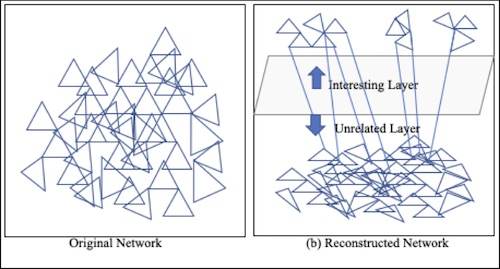Figure 1. Network Decomposition
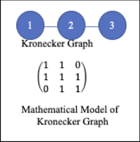Figure 2(a). Kronecker Graph
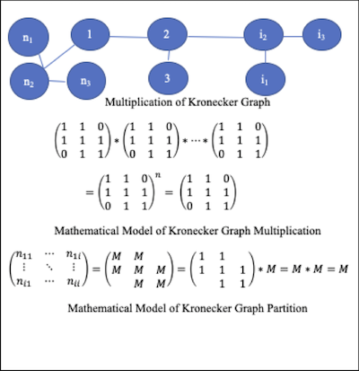Figure 2(b). Graph Join and Project
Results
From 1991 to 2000, we summarized the number of nodes (papers and references), the number of edges (citations), maximum number of times that a paper was cited, the averages number of times that a paper was cited, as shown in figure 3.
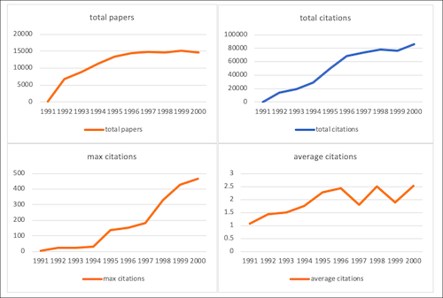Figure 3. Statistics of Co-citation from 1991 to 2000
Each co-citation defines a topic so that the frequent co-citations define the popular topics. The frequency of the co-citation is highly biased. We use Expectation Maximization (EM) to group co-citations into 3 clusters, and statistics of popular topics is shown in figure 4. From 1991 to 2000, the number of publications, citations, and co-citations increase. From 1991 to 1995, there are less publications, citations, and co-citations. After 1995, the increase of publications, citations, and co-citations is not as fast as those years from 1991 to 1995. The number of topics increases from 1991 to 1994. After 1994, the change in the number of topics each year is small. Sometimes, it goes up and sometimes, it goes down, and it is around the average of 800 topics each year.
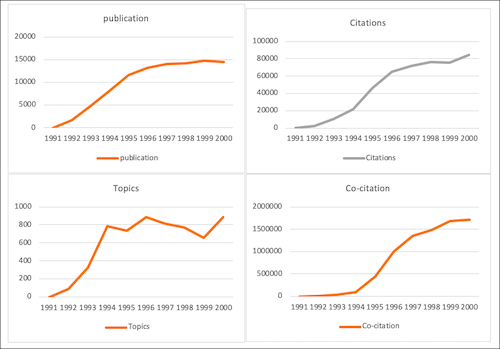Figure 4. Statistics of Popular Topics from 1991 to 2000
These trends of research in10 years indicate that technology evolves every five years and can be completely updated in 10 years. When we work the frontier research, we need to trace back for about 5 years. In more than 5 years, most of the research is about something else. The trends of new publications, citation, and co-citations are consistent which can prove each other.
The number of topics increase from 1991 to 1994. In 1991, there are no paper published about the popular topics in 2000. From 1995 to 2000, the number of topics is almost stable. the number of topics goes up and down but the changes are small. The number of topics is consistent with the number of publications, the number of citations, the number of co-citations.
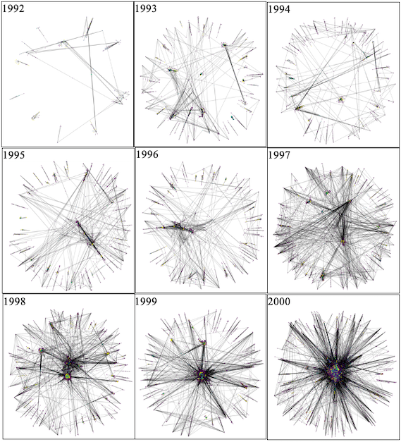Figure 5. Citation Network on Popular Topics from 1992 to 2000
Top